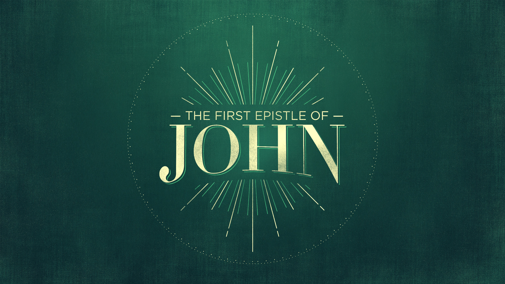

And God said, “Let there be light,” and there was light.
Genesis 1:3 NIV
The Lord wraps himself in light as with a garment; he stretches out the heavens like a tent
Psalm 104:2 NIV
“Arise, shine, for your light has come, and the glory of the Lord rises upon you.
Isaiah 60:1 NIV
The sun will no more be your light by day, nor will the brightness of the moon shine on you, for the Lord will be your everlasting light, and your God will be your glory. Your sun will never set again, and your moon will wane no more; the Lord will be your everlasting light, and your days of sorrow will end.
Isaiah 60:19-20 NIV
The true light that gives light to everyone was coming into the world.
John 1:9 NIV
When Jesus spoke again to the people, he said, “I am the light of the world. Whoever follows me will never walk in darkness, but will have the light of life.”
John 8:12 NIV
While I am in the world, I am the light of the world.”
John 9:5 NIV
Some Christians fail to confess sin because they are uncomfortable confronting their own failings. But others fail to confess sin because they are all too comfortable with it.
He is the propitiation for our sins, and not for ours only but also for the sins of the whole world.
1 John 2:2 ESV